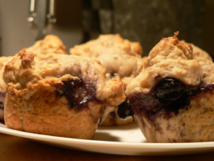

Blueberry-yogurt muffins
Let’s all send our hearts out to my poor mother who, despite her svelte figure, insists on participating in Weight Watchers. I’m rooting for her, but she’s already the hottest mom I know, and she should be able to cook and eat as she pleases. Good luck, Mommy!
{kind=link}
I promise to stop with this Mark Bittman stuff after this post, and to move on to something more interesting and advanced. In the meantime, I made my first muffins.

Maybe these look sloppy, but I think they’re rustic and beautiful. Are you supposed to shape muffins in the tin at all? I just slopped them in there, hoping for irregularity. Muffins are easy! Very few ingredients, and hardly any work before baking. I found these to be salty, but I think it was partly my own fault. Mark says he doesn’t enjoy sweet muffins, though, so next time I’ll increase the sugar (and this is coming from me, sugar’s worst enemy).
The following recipe is a mashup of his basic muffins, blueberry muffins, and yogurt muffins. Basically, I incorporated two variations at the same time. I tried searching for “Mark Bittman muffins,” and I could only find an old post from Eat!
Ingredients
1 tablespoon melted butter
2 cups all-purpose flour
1/2 cup sugar
1/2 teaspoon salt
1 teaspoon baking powder
1 teaspoon cinnamon
1/2 teaspoon baking soda
1 egg
1.25 cups yogurt or sour cream (I used Wedneday’s favorite)
Lemon zest (optional)
1 cup frozen blueberries
Preheat the oven to 400ºF and grease a 12-cup muffin tin. Mix the dry ingredients in a bowl. Beat the egg, milk, and butter together. Make a well in the dry ingredients and fold in the wet until the mixture is moist but still lumpy. Add extra milk/yogurt/sour cream if necessary. Fold in a bit of lemon zest and then the blueberries at the last minute.
Fill the muffin compartments 2/3 full, handling the batter as little as possible. Put a bit of water into any unused compartments, and bake for about 30 minutes, until they are nicely browned and a toothpick comes out clean. Let rest 5 minutes, and serve warm.
Since these were salty, I served them (to myself) slathered with apple butter, which was a happy combination.
In other baking news, I just had a third round with Nigella’s dense chocolate cake, and it’s as delicious and simple as ever. If you enjoy dense, barely sweet chocolate cake, it’s worth making.
Comments
I portion my muffins into the tins with a round ice cream scoop; same for cupcakes, but then they don’t look “rustic”, but have round, fairly even tops. The advantage of that is that you are getting roughly the same amount of batter into each cup.
I’m surprised these tasted salty with such a small amount of salt in them. The butter is pretty sparse, too. I guess the yogurt would help make them moist, but your batter seems a little “lean”.
You know, one thing has always puzzled me about putting water in the empty muffin cups – how do you keep it from spilling all over your counter when you dump the tin upside down to get the muffins out? I have had freshly baked muffins splashing into puddles, which really pissed me off. Unless they mean just a teaspoon or something which is meant to evaporate in the oven. I simply quit doing it with no ill effects to either muffins or tin.
OH fabulous! I ADORE Blueberries – Can’t wait to try them Sunday morning. (have to help with nephew’s third bday party tomorrow).
and that choc cake – i may have to go make it right now….
Hi
I just found your blog – which was a great discovery! – and so am not entirely up to speed with all of the background ….However, I note your comments about not wanting to cook with sugar. About a year ago, I discovered a sugar substitute that doesn’t lose its sweetness in baking, which opens up a whole vista of opportunities in diet-friendly cooking. The stuff is called ‘Splenda’ – made in the UK by Tate & Lyle and I think available in the US.
Thanks for visiting, Pomiane! We do have Splenda here, and it’s popular, but I don’t avoid sugar for dietary reasons—I avoid it because I don’t enjoy very sweet things. In any case, I’m much more likely to reach for sugar than a substitute.
This is a stupid recipe or im blind, it says beat egg and milk and no where does it say how much milk. and of course i’m already half way done with recipe b/4 i figure out the amount of milk needed is not listed.
The previous commenter is correct – the directions do say to beat the egg with the milk, but you must have meant the yogurt. Was the recipe written that way? Some cookbooks are very poorly edited (as are some blogs!)
Mom’s right, and I apologize, candr. I messed this one up. Mark Bittman’s variations are hard to follow sometimes. This one reads, “Reduce baking powder to 1 teaspoon, add 1/2 teaspoon baking soda to dry ingredients. Substitute 1.25 cups sour cream or yogurt for the milk and cut the butter or oil back to 1 tablespoon.” I got lost in all the changes, and forgot to change “milk” to “yogurt.”
Add a comment